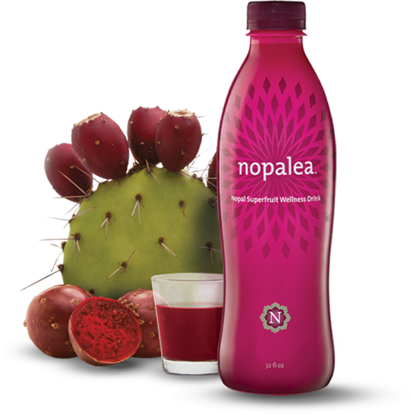

<!doctype html>
<html lang="en">
<head>
    <meta charset="UTF-8">
    <meta name="viewport"
          content="width=device-width, user-scalable=no, initial-scale=1.0, maximum-scale=1.0, minimum-scale=1.0">
    <meta http-equiv="X-UA-Compatible" content="ie=edge">
    <title>Nopalea.com-Site</title>
    <link rel="stylesheet" href="css/main.css">
</head>
<body>

<section class="hero-block hero-home">
    <header class="main-header" id="js-main-header">
        <div class="container flex">
            <a href="#" class="main-logo">
                <span>Nopalea<sup>&trade;</sup></span>
            </a>
            <nav id="js-nav">
                <ul>
                    <li><a href="index.html">Home</a></li>
                    <li><a href="science.html">Science</a></li>
                    <li><a href="product.html">Shop</a></li>
                </ul>
                <a href="#" class="btn-transparent">Order Now!</a>
            </nav>

            <div class="mobile-block" id="js-mobile-block">
                <div class="mobile-toggle">
                    <span></span>
                    <span></span>
                    <span></span>
                </div>
            </div>
        </div>
    </header>
    <div class="container">
        <div class="hero-content">
            <h1>Wellness reimagined</h1>
            <p class="sub-title">Improve Joint Mobility, Reduce Inflammation
                and Restore Vitality with Nopalea&trade;</p>
            <a href="#" class="btn-accent">SHOP  NOPALEA NOW!</a>
        </div>
    </div>
</section>

<section class="guarantee-bar">
    <div class="container">
        <p class="text-center">THE TOP SELLING INFLAMMATION SUPPLEMENT FOR over 10 YEARS... NOW MORE AFFORDABLE THAN EVER!</p>
    </div>
</section>

<section class="elevator-pitch-block theme-color">
    <div class="container">
        <h2>Your quality of life depends on your ability to remain active.</h2>
        <p>For generations, stiff and aching joints, decreased mobility and loss of vitality have been accepted as natural signs of aging. Now, not only do we know the cause, we have a solution.</p>
        <p>In a new report, Harvard Medical School points to unchecked chronic inflammation as playing a central role in some of the most challenging diseases of our times, including: rheumatoid arthritis, cancer, heart disease, diabetes, asthma and even Alzheimer’s.</p>
    </div>
</section>

<section class="info-block">
    <div class="container">
        <div class="grid">
            <div class="col">
                <div>
                    <p class="logo-nopalea">Nopalea</p>
                    <p>is a breakthrough dietary supplement that promotes a state of wellness by supporting the normal and essential anti-inflammatory function performed by the immune system. </p>
                </div>
                
            </div>
            <div class="col">
                <div>
                    <p class="logo-nopalea">Nopalea</p>
                    <p>is a delicious, nutrient-dense drink made from the Sonoran Superfruit of the Nopal Cactus (prickly pear), is brimming with antioxidants that support detoxification, healthy inflammation and whole-body wellness.</p>
                </div>
                
            </div>
        </div>
    </div>
</section>

<section class="testimonials theme-color-second">
    <div class="container grid">
        <div class="col">
            <blockquote>
                <p class="text-blockquote">“After a short time of taking Nopalea, I was able to do things I hadn’t been able to do for a whole year.”</p>
                <p class="author">—Joan C., TriVita Member since 2011</p>
            </blockquote>

            <blockquote>
                <p class="text-blockquote">“Thank you, TriVita, for this remarkable product. It’s the only one on the market that really works!”</p>
                <p class="author">—Dennis D., TriVita Member since 2006</p>
            </blockquote>
        </div>
        <div class="col">
            <blockquote>
                <p class="text-blockquote">“I suffered a knee injury a while ago and was already taking Nopalea at the time. My knee (and the rest of my leg) never got swollen. My doctor told me that swelling is normal during recovery and was amazed that I didn’t have any. My recovery time was quick, and when he asked about it, I told him it was the Nopalea”</p>
                <p class="author">—Doreen C., TriVita Member since 2005</p>
            </blockquote>
        </div>
    </div>
</section>

<section class="science-block">
    <div class="container">
        <h2 class="title-section">What The Science Says</h2>
        <div class="grid">
            <div class="col">
                <p class="descr-check-list">In a double-blind, placebo-controlled clinical study, Nopalea is shown to:</p>
                <ul class="check-list">
                    <li>Help improve joint mobility and range of motion</li>
                    <li>Improve neck and back motion forgreater mobility and flexibility</li>
                    <li>Enhance quality of life</li>
                    <li>Lower elevated levels of C-Reactive Protein –the main indicator of chronic inflammation</li>
                </ul>
                <a href="#" class="btn-accent">LEARN MORE</a>
            </div>
            <div class="col col-img hide-mobile">
                
            </div>
        </div>
    </div>
</section>

<section class="nopa-factory theme-color">
    <div class="container">
        <div class="grid">
            <div class="col flex-center">
                
            </div>
            <div class="col flex-center">
                <p class="bold">Nopalea’s fruit is hand-picked in the
                    Sonoran Desert using sustainable wildcrafting techniques and is pureed and bottled in a state-of-the-art facility right here in America.</p>
                <p class="italic bold">Stop inflammation in its tracks and restore your mobility, flexibility and quality of life with Nopalea!</p>
            </div>
        </div>
    </div>
</section>

<section class="chronic-inflammation">
    <div class="container">
        <h2 class="title-section">Chronic Inflammation</h2>
        <div class="grid">
            <div class="col">
                <p>The World Health Organization ranks chronic diseases as the greatest threat to human health, with the prevalence of diseases associated with chronic inflammation anticipated to increase persistently for the next 30 years in the United States.<a href="https://www.ncbi.nlm.nih.gov/books/NBK493173/" target="_blank" class="links-reference"><sup>(1)</sup></a></p>
                <ul>
                    <li>In 2000, nearly 125 million Americans were living with chronic conditions and 61 million (21%) had more than one.
                        <a href="https://www.ncbi.nlm.nih.gov/books/NBK493173/" target="_blank" class="links-reference"><sup>(1)</sup></a>
                    </li>
                    <li>In recent estimates by Rand Corporation, in 2014 nearly 60% of Americans had <span class="bold">at least one chronic condition</span>, 42% had <span class="bold">more than one</span> and 12% of adults <span class="bold">had 5 or more</span> chronic conditions.<a href="https://www.ncbi.nlm.nih.gov/books/NBK493173/" target="_blank" class="links-reference"><sup>(1)</sup></a></li>
                    <li>Worldwide, <span class="bold">3 of 5 people die due to chronic inflammatory diseases</span> like stroke, chronic respiratory diseases, heart disorders, cancer, obesity, and diabetes.<a href="https://www.ncbi.nlm.nih.gov/books/NBK493173/" target="_blank" class="links-reference"><sup>(1)</sup></a></li>
                </ul>
            </div>
            <div class="col">
                <p class="highlighted-text bold">There are two types of inflammation: <br>acute and chronic.</p>
                <p><span class="bold">Acute inflammation</span> is your body’s natural response to “hostile invaders” such as bacteria, fungi, injury and trauma. It comes on rapidly and subsides once the body has neutralized the threat.</p>
                <p><span class="bold">Chronic inflammation,</span> however, occurs when your body’s healthy response goes into overdrive and launches an attack on healthy cells and tissues. According to Cleveland Clinic, this can trigger your body’s disease responses.
                    <a href="https://health.clevelandclinic.org/why-you-should-pay-attention-to-chronic-inflammation/" target="_blank" class="links-reference"><sup>(2)</sup></a>
                    This prolonged state of emergency can cause lasting damage to your heart, brain and other organs.</p>
            </div>
        </div>
    </div>
</section>

<section class="doc-section theme-color-second">
    <div class="container">
        <div class="grid">
            <div class="col">
                <blockquote>
                    <p class="text-blockquote">“Chronic inflammation is the biggest contributor to chronic disease. When I speak about diabetes, and all the hundreds of millions of people with diabetes around the world, I have to consider chronic inflammation. When I speak about cancer, which is my specialty, I have to address chronic inflammation. I cannot undermine or neglect its central role in causing diseases.”</p>
                    <p class="author">	— Jarir G. Nakouzi M.D</p>
                </blockquote>
                <a href="#" class="btn-white">Learn About The Science</a>
            </div>
            <div class="col flex-bottom">
                
            </div>
        </div>
    </div>
</section>

<section class="cta-block" id="test">
    <div class="container">
        <div class="grid">
            <div class="col flex-center">
                <h2 class="title-section">Ready to improve your
                    flexibility, mobility, range
                    of motion and vitality?</h2>
                <a href="#" class="btn-accent">SHOP  NOPALEA NOW!</a>
            </div>
            <div class="col col-img hide-mobile">
                
            </div>
        </div>
    </div>
</section>

<footer class="main-footer theme-color">
    <div class="container">

        <div class="footer-nav">
            <ul class="nav-list">
                <li class="top-link"><a id="js-btn-up">Top</a></li>
                <li><a href="index.html">Home</a></li>
                <li><a href="science.html">Science</a></li>
                <li><a href="product.html">Shop</a></li>
            </ul>
            <ul class="nav-list">
                <li><a href="#">About Us</a></li>
                <li><a href="#">Privacy Policy</a></li>
                <li><a href="#">Terms of use</a></li>
            </ul>
        </div>

        <a href="#" class="trivita-logo">
            
        </a>
        <p class="copyright-text">MYOHEALTH , LIVE STRONGER AND BOLDER AT ANY AGE, AND EXPERIENCE WELLNESS ARE ©2019 TRIVITA, INC. ALL RIGHTS RESERVED. </p>
    </div>
</footer>

<script>
        var header = document.getElementById('js-main-header');
        var btnUp = document.getElementById('js-btn-up');

        document.getElementById('js-mobile-block').addEventListener('click', function(e) {
            header.classList.toggle('open-nav');
        });

        var mobileMenu = document.getElementById('js-nav');
        mobileMenu.onclick = function(e) {
            header.classList.remove('open-nav');
        };

        btnUp.addEventListener('click', function(e) {
            e.preventDefault();
            scrollToTop(300);
        });

        function scrollToTop(scrollDuration) {
            var scrollStep = -window.scrollY / (scrollDuration / 15),
                scrollInterval = setInterval(function(){
                    if ( window.scrollY != 0 ) {
                        window.scrollBy( 0, scrollStep );
                    }
                    else clearInterval(scrollInterval);
                },15);
        }
</script>

</body>
</html>